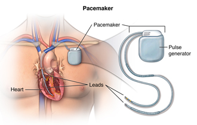

📜 The development of pacemakers over the past 60+ years is one of the most important advances in cardiac care.
📜 Evolution of Pacemakers
1950s — External Pacemakers:
First pacemakers were large, external devices connected to the heart through electrodes inserted into the chest.
They were powered by wall electricity or large batteries.
Example: In 1958, the first implanted pacemaker by Rune Elmqvist and surgeon Åke Senning failed after a few hours; but it marked the beginning of cardiac pacing.
1960s–1970s — Implantable Pacemakers:
Devices became small enough to implant under the skin.
Early versions used nickel-cadmium rechargeable batteries, but battery life was short.
Devices provided simple fixed-rate pacing.
1980s — Demand / On-Demand Pacemakers:
Pacemakers became “smart” enough to detect when the heart needed pacing.
Demand pacemakers delivered pulses only when needed, conserving battery life and improving efficiency.
1990s — Dual-Chamber and Rate-Responsive Pacemakers:
Devices began pacing both the atria and ventricles.
Rate-responsive pacemakers adjusted heart rate based on body activity, using sensors to detect motion or breathing.
Modern pacemakers are smaller, more durable, and MRI-compatible.
Leadless pacemakers (like Medtronic Micra) are directly implanted into the heart without leads or a chest pocket.
Remote monitoring through wireless technology allows doctors to track performance without frequent in-person visits.
⚙ Two Major Types of Pacemakers (Detailed)
✅ 1. Single-Chamber Pacemaker
Function: Stimulates one heart chamber — usually the right ventricle.
Indications: Used when only the ventricles need pacing, for example:
Complete heart block (AV block)
Chronic atrial fibrillation with slow ventricular response
How it works: The device delivers electrical pulses through a lead to the right ventricle. It ensures the ventricle contracts when the natural heart signal is too slow or absent.
Limitations: It does not synchronize atrial and ventricular contractions, which can reduce cardiac efficiency, especially in people with normal atrial activity.
✅ 2. Dual-Chamber Pacemaker
Function: Stimulates both the right atrium and right ventricle, coordinating their contraction.
Indications: Used in patients with:
AV block
Sick sinus syndrome
Bradycardia with intact AV conduction
How it works:
One lead is placed in the right atrium.
One lead is placed in the right ventricle.
The pacemaker senses and paces both chambers, maintaining the normal atrioventricular sequence (atrium contracts first, pushing blood into the ventricle, followed by ventricular contraction).
Advantages:
Better cardiac output
Reduced symptoms like fatigue and dizziness
Improved exercise tolerance
More physiologic heart rhythm
×
⚡ 2. Electrical Safety in Pacemaker Use (Detailed Explanation)
Pacemakers are life-saving devices, but because they are electronic and implanted in the body, they require special precautions to ensure electrical safety.
The key goal is to prevent device malfunction, interference, or patient injury from external electrical or magnetic sources.
🔧 1. Electromagnetic Interference (EMI)
What is EMI?
Electromagnetic interference is the disruption of a pacemaker’s normal operation due to external electromagnetic fields.
Common sources of EMI:
Mobile phones (especially when held near the chest)
Security systems (airport security gates, theft detectors)
Microwave ovens (modern ones are generally safe, but caution is still advised)
Power tools or welding equipment
MRI machines and CT scanners (especially MRI, which uses strong magnetic fields)
Large speakers with powerful magnets
Effects of EMI on pacemakers:
Inhibition of pacing pulses (pacemaker stops firing)
Triggering inappropriate pacing
Switching the device into a backup or noise mode
Rarely, permanent damage to the pacemaker circuitry
🛡 2. Patient Safety Guidelines
To reduce the risk of electrical hazards:
Maintain distance from sources:
Medical and dental procedures:
Home appliances:
🔍 3. Regular Device Monitoring
Patients should have regular follow-ups (typically every 6-12 months) to:
Check battery status.
Evaluate lead integrity.
Ensure proper sensing and pacing thresholds.
Update device programming if needed.
Many modern pacemakers have remote monitoring:
Wireless data transmission to the doctor.
Early detection of malfunctions.
🔌 4. Electrical Safety Design Features in Pacemakers
Pacemakers have built-in safety mechanisms, such as:
Shielding and filtering circuits to block EMI.
Hermetically sealed titanium casing to resist moisture and corrosion.
Noise reversion modes that automatically switch the pacemaker to a safe operating mode when interference is detected.

×
⚖ 3. Regulatory and Safety Standards (Detailed Explanation)
Pacemakers are critical, life-supporting medical devices — so they are subject to strict regulatory control and international standards to guarantee safety, quality, and performance.
Without these standards, there would be a high risk of device failures, patient harm, or ineffective treatment.
🌎 1. Regulatory Bodies
FDA (U.S. Food and Drug Administration, USA):
Oversees the approval, manufacturing, and post-market surveillance of medical devices in the United States.
Pacemakers are classified as Class III devices (highest risk category).
They must undergo Pre-Market Approval (PMA) before reaching patients.
The FDA monitors adverse events and can issue recalls if needed.
CE Marking (European Economic Area):
Indicates that a pacemaker meets EU safety, health, and environmental protection standards.
Devices must comply with Medical Device Regulation (MDR, EU 2017/745).
CE marking allows free marketing across EU countries.
Other countries have their own regulatory bodies:
Japan: PMDA (Pharmaceuticals and Medical Devices Agency)
India: CDSCO (Central Drugs Standard Control Organization)
Australia: TGA (Therapeutic Goods Administration)
📏 2. International Standards
To ensure consistency and safety across manufacturers and countries, international standards are followed:
ISO 14708:
Title: Implants for surgery — Active implantable medical devices
Covers general requirements for performance, safety, and testing of active implants like pacemakers.
Includes aspects like:
Mechanical strength and durability
Biocompatibility of materials
Electromagnetic compatibility (resistance to EMI)
Sterilization and packaging requirements
IEC 60601-1:
Standard for electrical safety and performance of medical electrical equipment.
Ensures the device withstands power surges, leakage currents, and electromagnetic disturbances.
🏥 3. Key Safety Areas Covered by Standards
Biocompatibility: Materials must not cause allergic reactions, toxicity, or inflammation.
Electrical safety: Devices must resist EMI, have appropriate insulation, and operate safely under all conditions.
Battery and lead reliability: Standards specify minimum battery life, lead flexibility, and break resistance.
Software safety: For modern pacemakers with programmable functions, software must be validated to prevent bugs or malfunctions.
Clinical performance: Standards ensure devices effectively sense and pace heart rhythms across patient populations.
×
🧪 4. Safety Testing and Validation (Detailed Explanation)
Before a pacemaker reaches patients, it must undergo extensive safety testing and validation to ensure it performs reliably over many years, even in challenging conditions.
These tests cover mechanical, electrical, software, and biological aspects of the device.
🔋 1. Battery Longevity Tests
Why it matters:
A pacemaker battery typically lasts 5–15 years. Failure can lead to life-threatening heart rhythm problems.
What’s tested:
Battery life under various pacing rates and loads.
Performance in extreme temperatures.
Shelf-life before implantation.
Methods:
Accelerated aging tests, real-time endurance testing, and chemical analysis.